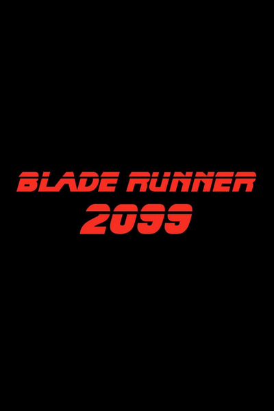

DRAMA · FICÇÃO CIENTÍFICA · SUSPENSE
Blade Runner 2099
Cinquenta anos após Blade Runner 2049, uma nova história explora replicantes, poder e identidade em uma Los Angeles transformada.
Estreia da série
Prime Video25 de novembro de 2026
Os títulos dos episódios serão adicionados quando forem divulgados.